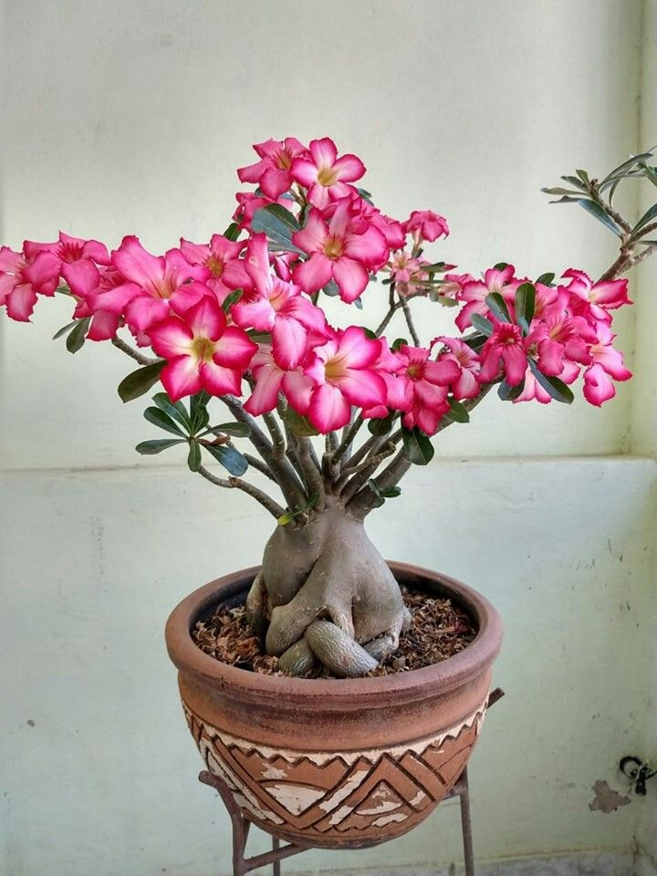

La rosa del desierto es una curiosa suculenta de tronco hinchado y preciosas flores en forma de trompeta. Se trata de una especie de fácil mantenimiento, muy utilizada para bonsáis, aunque tolera mal las heladas. La floración suele ser muy abundante y se produce, en su medio natural, durante todo el año. Aunque no suele enfermarse, ten cuidado porque es muy tóxica.
Tiene un aroma muy suave o casi imperceptible.
Necesita mucho sol directo para crecer saludable.
Se recomienda mínimo 6 horas de luz solar al día.
Riego moderado, especialmente en clima cálido.
En invierno, reducir el riego a cada 10 o 15 días.
No encharcar la tierra, porque sus raíces pueden pudrirse.
Retirar ramas secas o dañadas para estimular el crecimiento.
La poda ayuda a mantener una forma más compacta y bonita.
La Rosa del Desierto almacena agua en su tronco grueso para sobrevivir en climas secos.
Es muy popular como planta ornamental por sus flores llamativas y su apariencia exótica.